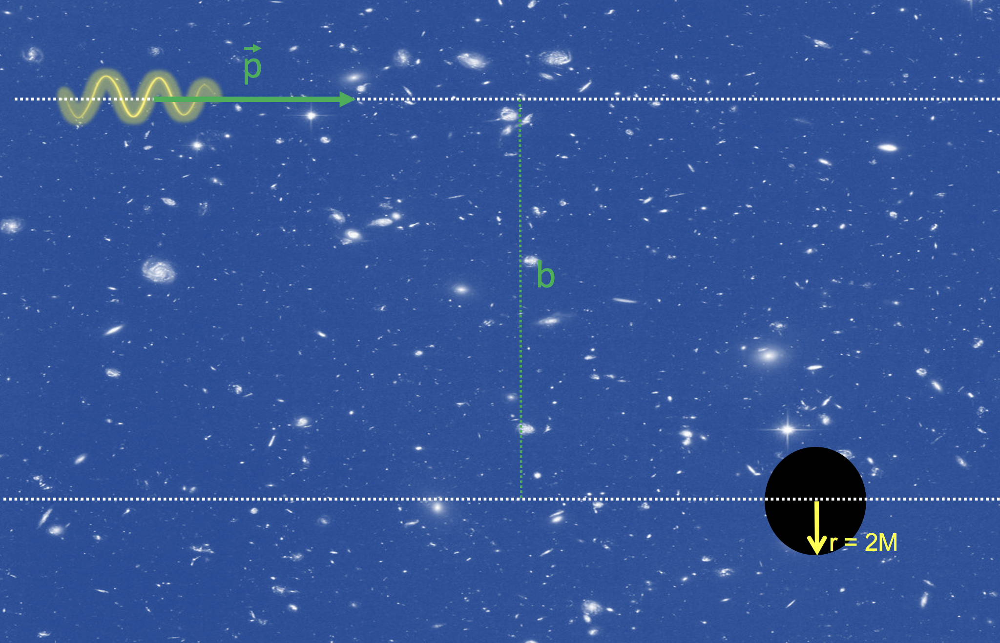

Forrige side🙂 🙁Relativistisk EulerPADLET

Forholdet L/E er knyttet til et begrep som du kommer til å møte mange ganger i fysikken i årene som kommer: impaktparameter. Denne brukes i interaksjoner mellom legemer, partikler eller, her, lys med massivt legeme. Over ser du et eksempel med et sort hull med masse M og et foton som kommer inn fra venstre side med bevegelsersmengde p⃗. I denne figuren er fotonet og det sorte hullet veldig langt fra hverandre selv om det ikke ser slik ut i figuren. Når de er langt fra hverandre (dvs. de har enda ikke begynt å påvirke hverandres bevegelse) så skal du
tegne en rett lang linje som følger p⃗ og
tegne en annen linje parallell til den første som går gjennom sentrum av det sorte hullet,
avstanden mellom disse to paralelle linjene er impaktparameteren b.